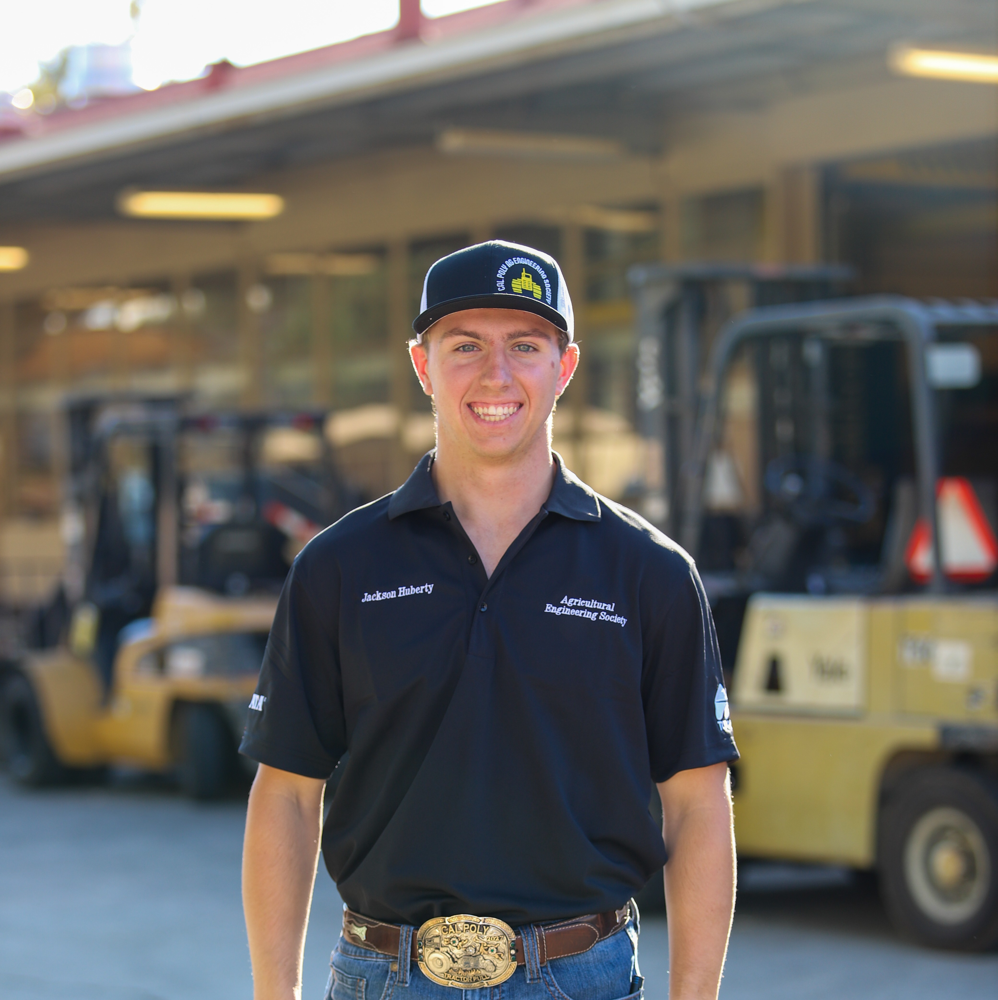
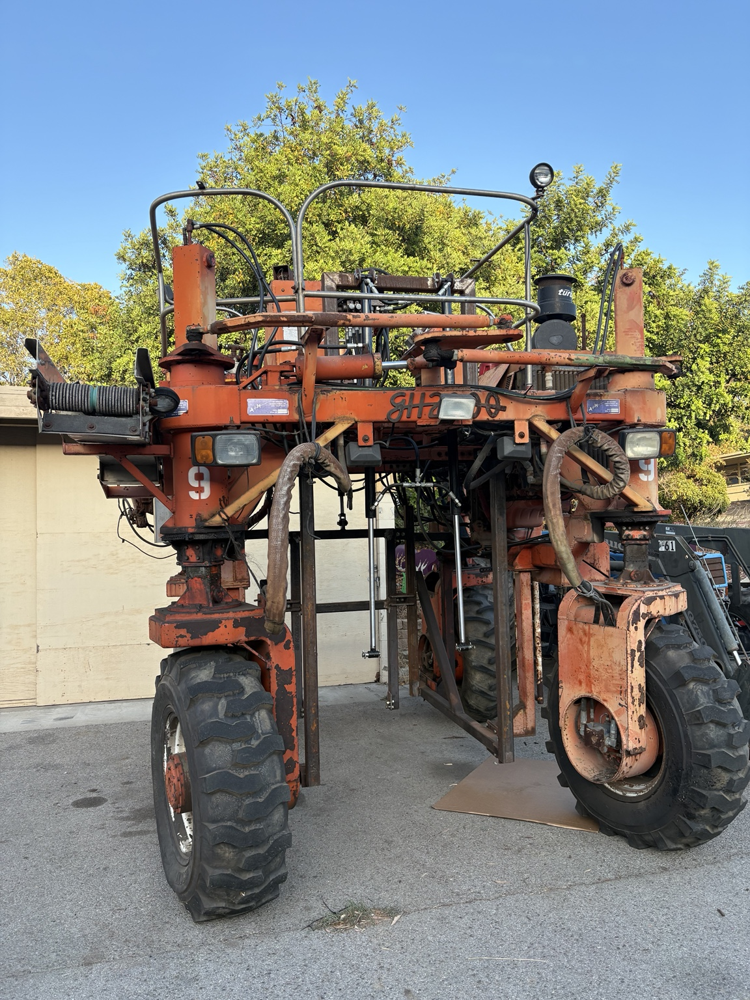

Quarter Scale Tractor
Structural Lead
Designed and fabricated structural components for Cal Poly's competition tractor, supporting the path from CAD to manufactured and tested hardware.
View ProjectEngineering Portfolio
Bioresource & Agricultural Engineering
Mechanical Design | Manufacturing | Prototyping
Engineering student focused on designing, building, testing, and improving real mechanical systems.

Problem → Design → Build → Test → Iterate → Final Result
Structural Lead
Designed and fabricated structural components for Cal Poly's competition tractor, supporting the path from CAD to manufactured and tested hardware.
View Project
Senior Project Manager
Led development of an agricultural machine concept from design planning through prototype and test preparation.
View Project
Hands-On Manufacturing Experience
Portfolio of machining setups, weldments, and fabricated components demonstrating practical shop capability.
View Project
Operations & Equipment Experience
Field-focused experience with machinery operation, maintenance support, and mechanical troubleshooting in agricultural settings.
View ProjectI am a Bioresource and Agricultural Engineering student at Cal Poly San Luis Obispo with interests in mechanical design, manufacturing, agricultural equipment, robotics, testing, and field engineering.
I enjoy projects where I can take an idea from CAD through fabrication, assembly, and testing. My experience includes SolidWorks, machining, CNC equipment, welding, agricultural machinery, project leadership, and hands-on troubleshooting.